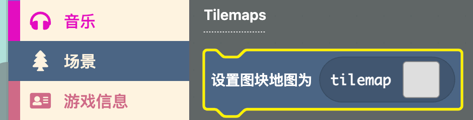
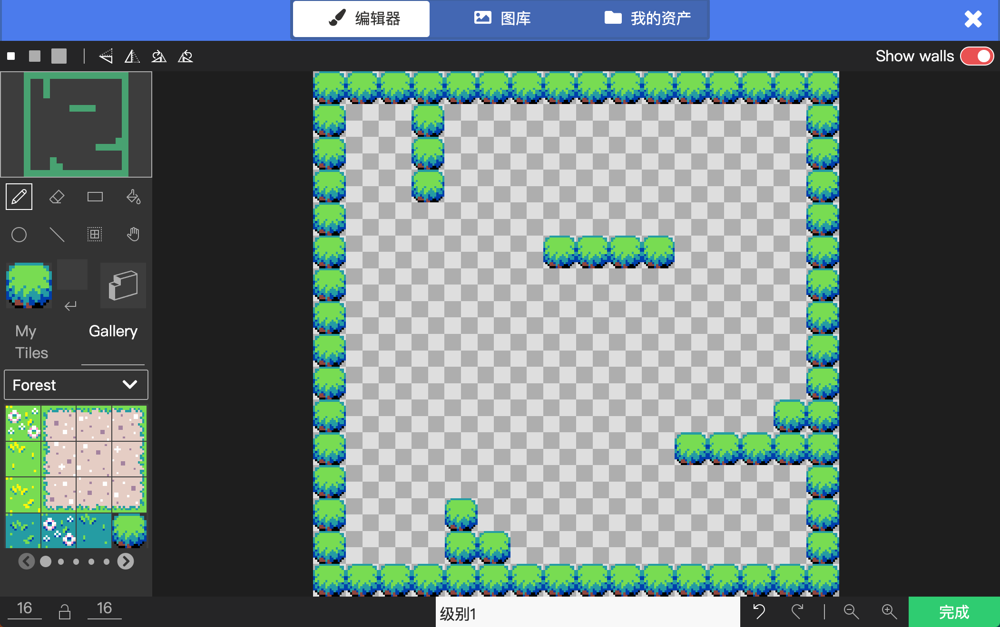
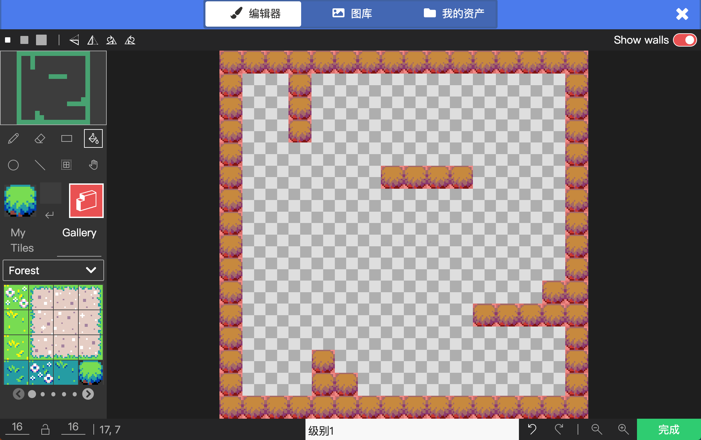
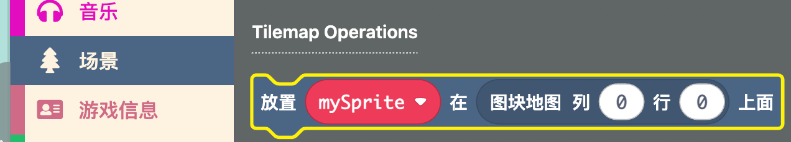
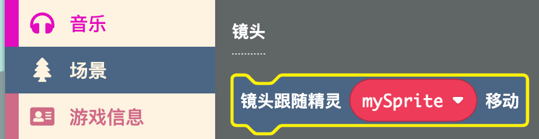
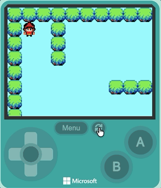

画一张自己的地图，让墙壁真的能把角色挡住
两种方式二选一：
功能01-角色移动）用地图编辑器设计一张比屏幕大的迷宫或房间，先用墙壁图块把"墙"画出来。
场景 → Tilemaps → 设置图块地图为 [tilemap] 到代码区16 × 16 个图块，够用了，不用改

🤔 想一想：现在角色是不是可以直接穿过墙壁？因为这时墙只是"画出来"的样子，还没变成真正的墙。下一步我们就把它变成真墙。
把刚才画出来的墙壁图块设为"墙"，让角色碰到后不能穿过去。
设置图块地图 积木上的灰色方框，重新打开地图编辑器
💡 小知识：墙设置是在地图编辑器里完成的，不需要拖积木；被设为墙的图块会自动产生碰撞；使用"平铺"按钮，在地图上点一下，就能快速把连在一起的墙壁图块一次性全部设为墙。
用"列、行"把角色放到地图入口，确保它出生在合适的图块上。
场景 → Tilemap Operations → 放置 [mySprite] 在图块地图 [列] [行] 上面，拖动到代码区当开机时 里创建精灵、设置图块地图之后2, 3（前一个是列，后一个是行）2、行填 3
⚠️ 注意：这里用的是列、行（第几格图块），和功能 01 里 设置位置 的 x、y（像素坐标）不一样。有地图以后用列、行放角色更方便准确。填数字时前一个是列，后一个是行。
让镜头一直跟随玩家角色，防止角色走出屏幕后看不到。
场景 → 镜头 → 镜头跟随精灵 [mySprite] 移动 到代码区当开机时 里创建精灵之后mySprite 改成你自己创建的精灵变量名
💡 如果没有相机跟随，角色走出屏幕后就看不到了。
美化地图，并检查整体效果。

| 参数 | 作用 | 建议 |
|---|---|---|
| 地图大小 | 控制地图有多宽多高 | 默认 16×16 即可，够大了 |
| 墙图块 | 决定哪些图块不能穿过 | 路径图块不要设为墙 |
镜头跟随精灵 积木中的精灵变量名是否正确（比如都是 蜗牛）放置 [mySprite] 在图块地图 [列] [行] 上面 的列、行值，让角色出生在空地上完成基础任务后，可以尝试：
放置 [mySprite] 在图块地图 [列] [行] 上面 把它放到地图的某个位置20 × 40 左右